Neurophysiology · Teaching Module
EEG Workbook
A structured, practical guide to EEG interpretation — key concepts, patterns, and Natus workflow. Complements (does not replace) textbooks, articles, and hands-on reading. Review this before your EMU rotation, and make sure you have Natus access via uapps.uoflhealth.org.
Developed by Hanah Alley MD, Harshini Sirvisetty, Zach Kolsrud DO, Catarina De Marchi-Assuncao MD — with EEG contributions from Dr. Evans, Dr. Palade, Dr. Sagi, Dr. Shafer · University of Louisville, Department of Neurology · v1
01 EMU Rotation & Reading Workflow▸
Daily Flow
- Come in at 8am. Scrubs are fine.
- Talk to Amanda/EMU team across the EMU reading room — ask for overnight events and all admissions for the day. Get the new admission's name, DOB, and arrival time.
- Start reading EEGs on your own before rounds.
- Write Progress Notes on EMU patients — use the "Medicine Progress Note" template, just rename it EMU Progress Note.
- Discuss priority reads first. Communicate findings with the Gen Neuro/Jewish/Stroke team.
- Most attendings will have you write the notes — save their dot phrases for their preferred format.
- Admit patients until 12pm if half-day, until 4pm if whole-day.
- Check out important items to the Jewish Team, including impending consults. It helps to start the H&P (via Epic notes) for pending admissions and give the Jewish team a heads-up.
What the Attending Will Ask
- A three-liner: reason for admission/consult
- History of seizures or semiology if possible
- Current ASMs and sedatives
- Whether there's any brain imaging
- What you see on the EEG — mark anything you're curious about
How to Admit an EMU Patient
- Once the patient is in the building, put in Admission (Bed Slip) orders:
Admit to In Patient > Med Surge > Reason: Convulsion - Enter the EMU Admission Orders (Order Set) — confirm Diet, EEG, Ativan/Diazepam, CBC, CMP, HCG (if female), DVT PPX
- Chart-check the patient even before they arrive in the building
- See the patient and ask the admit questions below — no need for an extensive HPI, since they likely already have one in Epic from the referring neurologist
- Check for any devices (VNS or RNS) that need to be interrogated or turned off
- After seeing the patient, call the EMU attending to discuss — which ASMs to continue or stop
- Do the med rec and resume necessary medications
- Post information on SharePoint and check out to the Jewish Team
What to Ask EMU Admits
- Referring physician
- Reason for EMU stay
- Last episode
- Frequency of this episode
- Last dose of their ASM
02 Basic Physiology▸
- Resting membrane potential (~ −70 mV): the inside of the neuron is negatively charged relative to the outside.
- Ion movement at rest: K⁺ moves in, Na⁺ moves out via the Na⁺/K⁺ pump.
- Action potential: increased Na⁺ permeability triggers a rapid Na⁺ influx.
- Depolarization: Na⁺ channels open, allowing Na⁺ entry until they close.
- Voltage-dependent channels open and close based on membrane potential.
- Time-dependent closure: Na⁺ channels close automatically after activation.
- Signal propagation: depolarization spreads along the membrane via electrotonic conduction.
- Repolarization: K⁺ exits, restoring the resting potential.
- Hyperpolarization: excess K⁺ efflux may briefly make the membrane more negative than −70 mV.
- Excitatory signals (EPSPs): neurotransmitters like ACh and glutamate open Na⁺/Ca²⁺ channels, increasing neuron activity.
- Inhibitory signals (IPSPs): GABA opens K⁺/Cl⁻ channels, decreasing neuron activity.
Action potential: Na⁺ influx drives depolarization; K⁺ efflux drives repolarization and transient hyperpolarization.
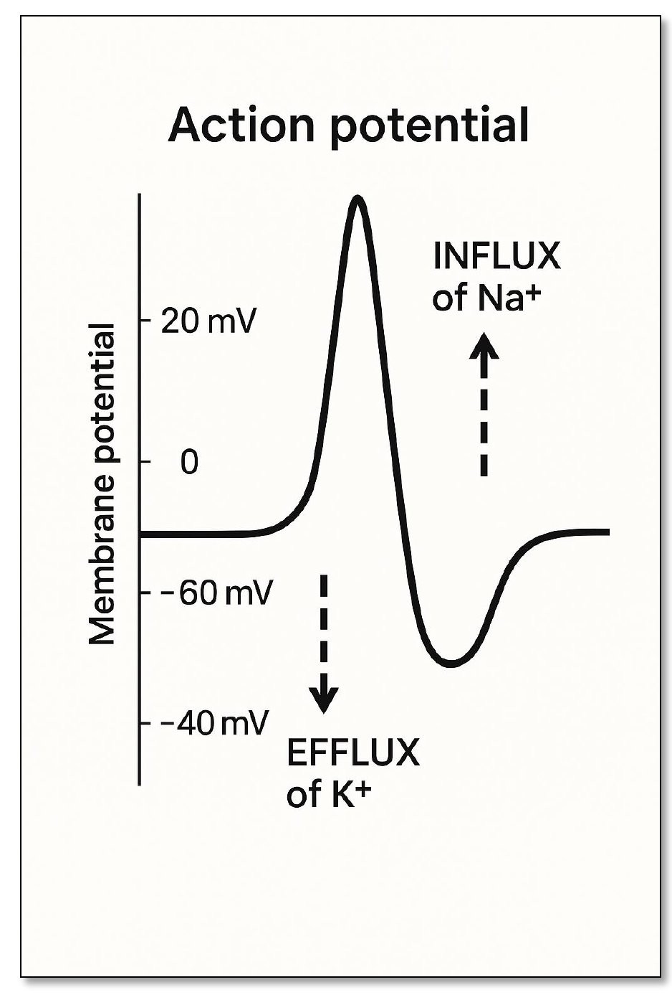
03 Equipment & the 10-20 System▸
- Electrodes are where electrocortical potentials are conducted and amplified.
- Each EEG channel displays the potential difference between two electrodes.
- Electrodes are placed using the 10-20 system — the skull is divided into 10% or 20% increments for electrode placement, keeping positioning consistent across different head shapes and sizes.
| Left | Brain Area | Right |
|---|---|---|
| Fp1 | Frontopolar | Fp2 |
| F3 | Frontal | F4 |
| F7 | Anterior Temporal | F8 |
| T3 | Mid Temporal | T4 |
| T5 | Posterior Temporal | T6 |
| C3 | Central | C4 |
| P3 | Parietal | P4 |
| O1 | Occipital | O2 |
| Midline: Fz, Cz, Pz | ||
Odd numbers = left hemisphere. Even numbers = right hemisphere. Midline electrodes carry a "z" (zero).
04 Setting Up in Natus▸
Step 1 — Log In
Log in to uapps.uoflhealth.org. Note: uapps.ulh.org will NOT have Natus.
Step 2 — Open Natus
Click the Natus Database icon. If too many Natus sessions are open at once, yours may not load — text the group to close Natus unless someone else needs it.
Step 3 — Find the Study
The default view shows "Today's Studies." Double-click a name to open it.
Step 4 — Confirm Your Settings
Make sure these 5 settings are in place before you start reading:
| LFF (Low Frequency Filter) | Filters out low-frequency activity |
| HFF (High Frequency Filter) | Filters out high-frequency activity |
| Notch Filter | Filters a specific frequency — 60 Hz in North America (outlet electrical fields), 50 Hz elsewhere |
| Sensitivity | Ratio of input voltage to output, in µV/mm. Lower sensitivity = smaller voltage displayed |
| Time Base | Horizontal time scale. Usual is 30 mm/sec (30 mm = 1 second). Faster = better for rapid changes; slower = better for slow rhythms |
Try different filter settings and see how the tracing changes.
Step 5 — Calibrate
Edit > Calibrate > Monitor Display, or change Time Base to 15 mm/sec. You should see 10 seconds per page — dark green gridline to dark green gridline is one second; light green to light green is 0.2 seconds.
Calibration: dark-green-to-dark-green = 1 second; light-green-to-light-green = 0.2 seconds.
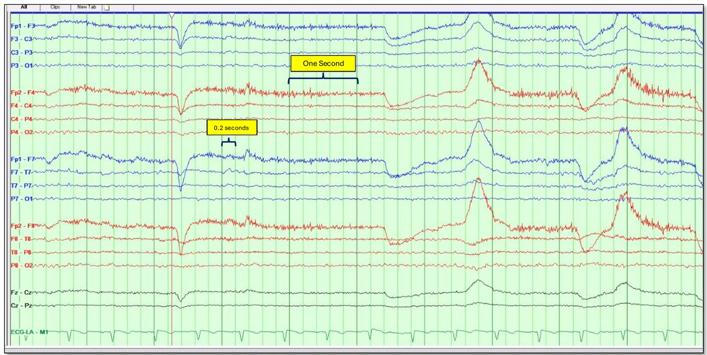
Step 6 — Scroll Mode
Change "Page" to "Scroll" and press spacebar to watch the EEG move in real time. Adjust playback "Speed" as needed.
Step 7 — Review Video
Click the camera icon to watch the patient video for an event. Video can only run 1–2 seconds before distortion and lag set in — don't push it faster than that.
Step 8 — Annotate
Press spacebar to pause. Align the red-line marker to the area of interest, type your annotation, and click OK.
Align the red-line marker to the event before typing the annotation.
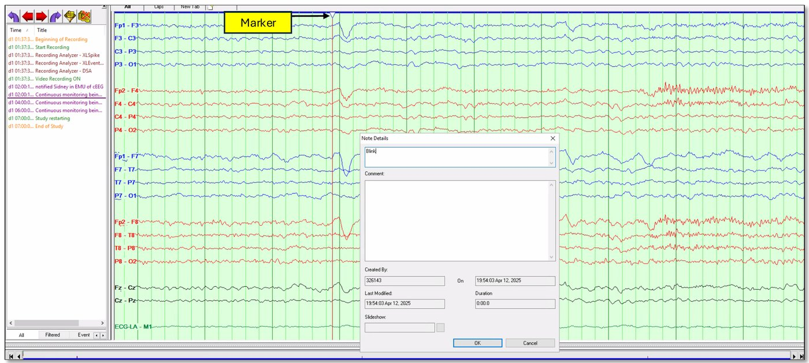
Step 9 — Save
You have to save (Ctrl+S) your annotation for anyone else to see it. When you exit Natus, a "Study Information" box pops up — avoid writing in the big white box, since some attendings use it for their preliminary read. Just click OK, then Yes to save changes.
Troubleshooting — Lead Artifact
If you see a messy "green line" contaminating multiple channels, it's likely the ECG lead artifact. Right-click the ECG lead on the left and select "Hide Selected." You can do this for any loose lead — but always tell the EEG tech so they can fix it.
Loose-lead artifact: right-click the offending channel → Hide Selected, and notify the EEG tech.
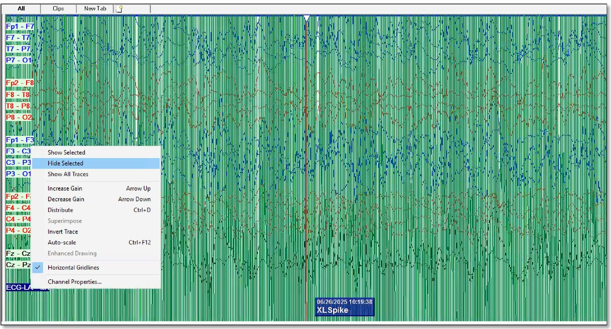
05 Tools on EEG▸
Frequency Tool
Helps describe the frequency composition of a section of tracing. Click the tool, then highlight the area of concern — it generates an FFT power spectrum with peak frequency and relative power in the delta/theta/alpha/beta bands.
Waveform Cursors
Help measure the voltage of a wave — peak to trough, not peak to baseline. Red marks the peak, blue marks the trough.
| Category | Voltage |
|---|---|
| Very Low | < 20 µV |
| Low | 20–49 µV |
| Medium | 50–149 µV |
| High | ≥ 150 µV |
06 Amplitude▸
Amplitude is the measure of EEG voltage change — the height of a waveform, measured in µV. In practice, it's a proxy for "voltage." Normal adult amplitude ranges from 10–100 µV.
| Category | Voltage |
|---|---|
| Very Low | < 20 µV |
| Low | 20–49 µV |
| Medium | 50–149 µV |
| High | ≥ 150 µV |
Very low amplitude.
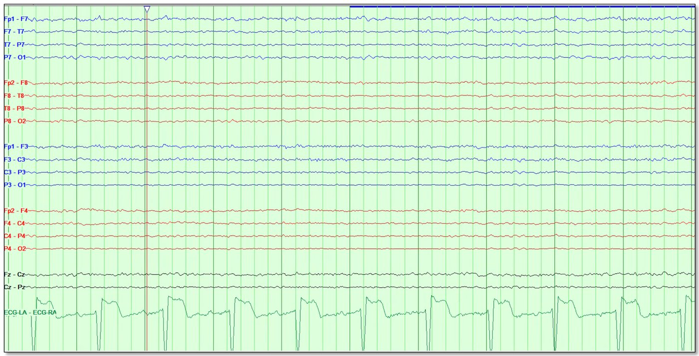
Moderately disorganized background, 8 Hz PDR, medium voltage activity with increased polymorphic delta/theta diffusely.
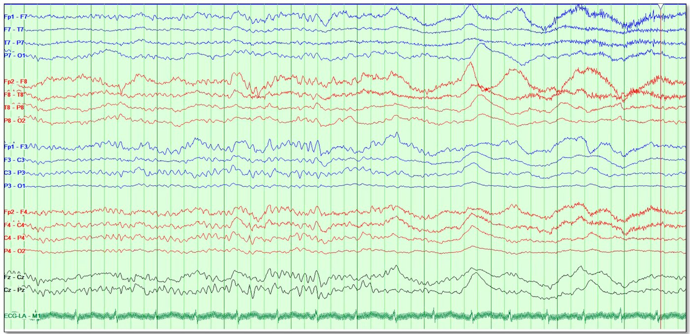
Bursts of high amplitude generalized discharges, separated by 1–2 second periods of suppression.
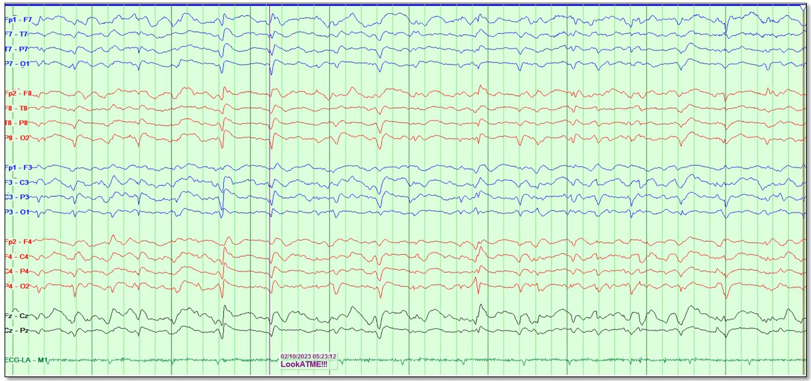
Isoelectric EEG — complete loss of cortical electrical activity, here in the context of anoxic encephalopathy.
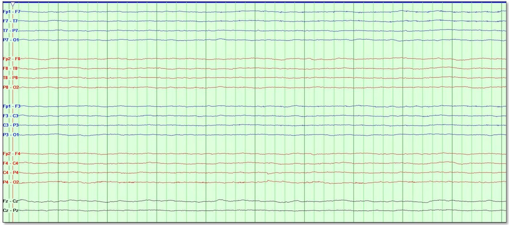
07 Frequency▸
Frequency describes the number of complete cycles/repetitive waves in one second, measured in Hertz (Hz).
| Band | Range | Seen In |
|---|---|---|
| Delta | 0–4 Hz | Slowest frequency. Should not be present in the normal awake brain. Seen in sleep, structural abnormalities, or encephalopathy. |
| Theta | 4–8 Hz | Seen in drowsiness and in children. Most likely abnormal if it dominates the PDR in a waking adult, or if focal. Hallmark of some normal findings such as Rhythmic Theta of Drowsiness. |
| Alpha | 8–12 Hz | Seen in normal awake patients over the posterior region; best seen with eyes closed. AKA the Posterior Dominant Rhythm (PDR). |
| Beta | 13–30 Hz | Seen with benzodiazepines, barbiturates, anesthetics. Also seen in myogenic artifact. |
| Gamma | > 30 Hz | — |
Trace and Count
To determine frequency by eye: trace the wave and count how many complete cycles occur in 1 second (use the gridlines from calibration).
Worked examples — bracket one second of tracing and count the cycles inside it (both examples: 8 Hz).
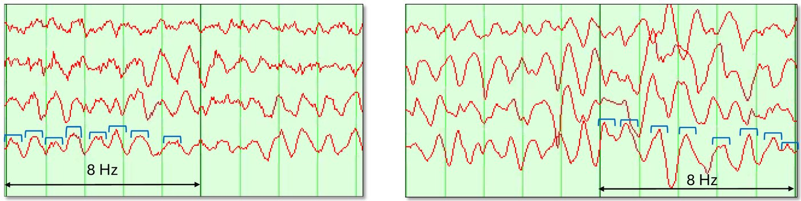
Delta rhythm: 3 Hz.
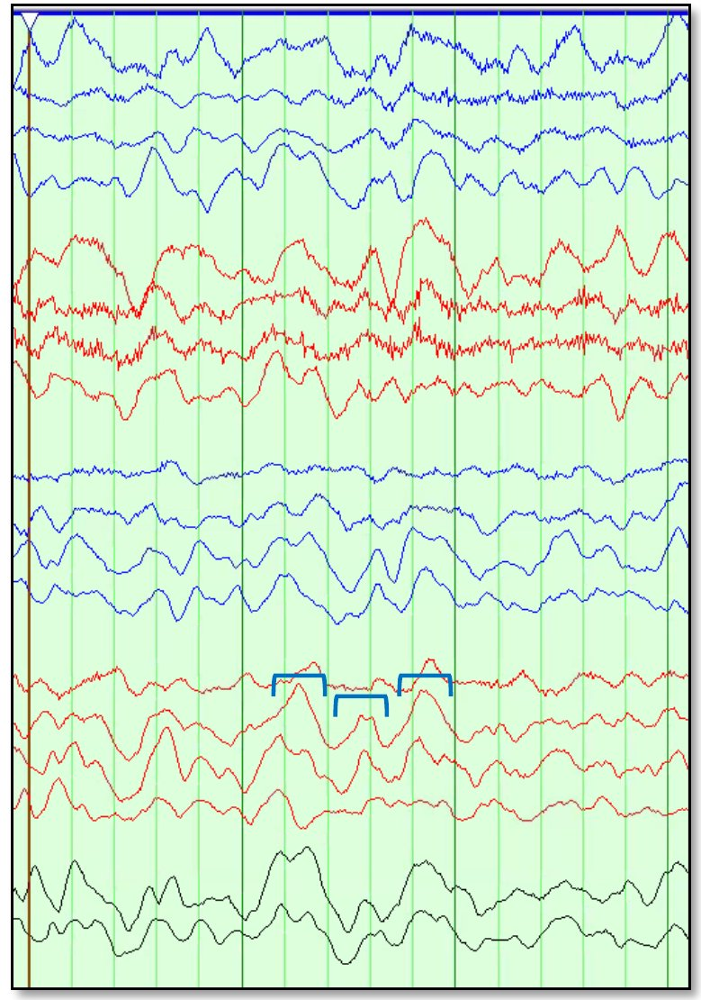
Theta rhythm: 7 Hz.
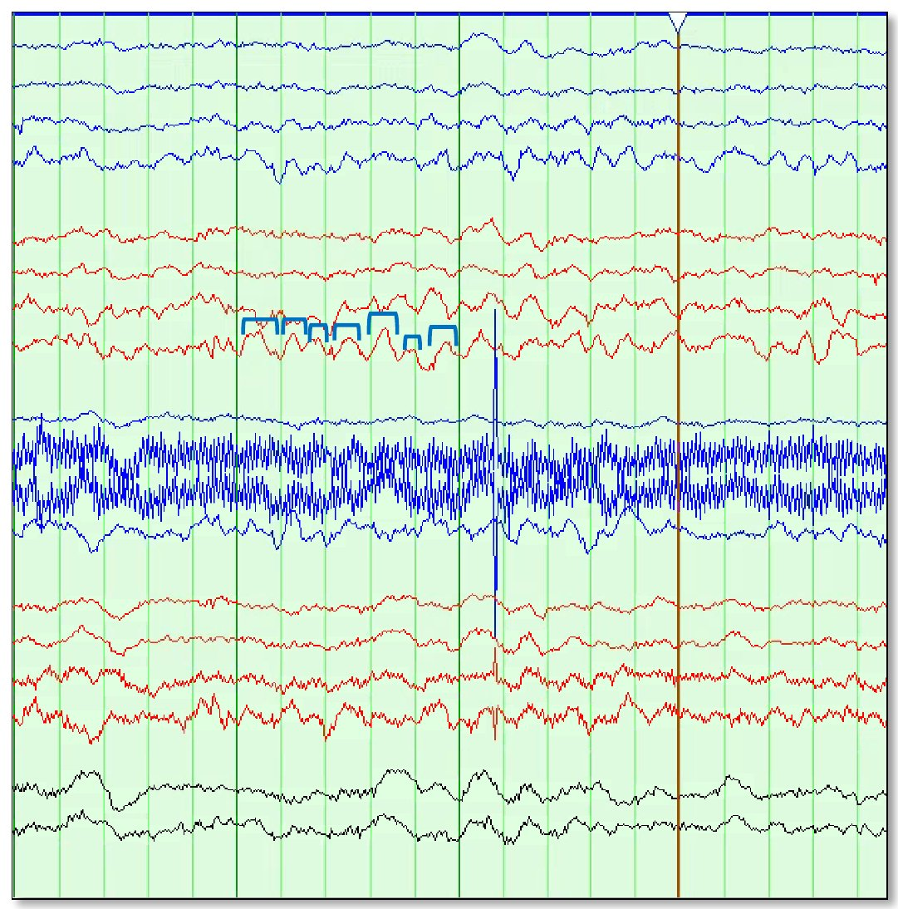
Alpha rhythm: 12 Hz.
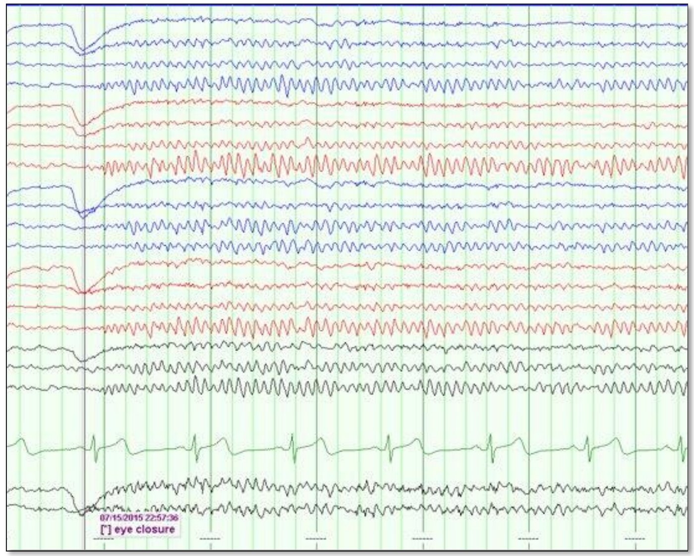
Beta rhythm: ~15 Hz.
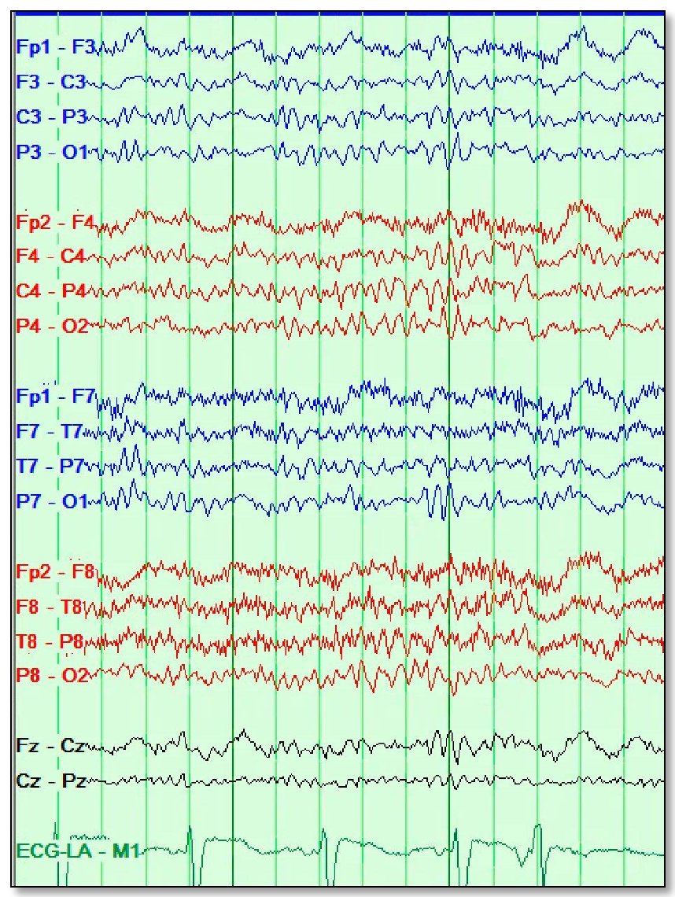
Sharp alpha — a normal-variant morphology worth recognizing so it isn't over-called as epileptiform.
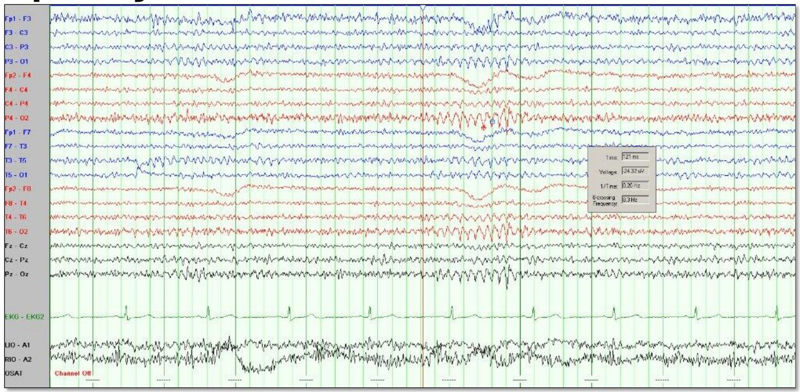
08 Background Activity & PDR▸
Posterior Dominant "Alpha" Rhythm (PDR)
- Rhythmic activity seen at the occipital or parietal regions
- Predominantly present during wakefulness while the eyes are closed
- Usually in the alpha frequency band in a healthy adult
- Wait > 1 second after eye closure before determining the frequency
Posterior dominant alpha rhythm, ~8 Hz, emerging after eye closure.
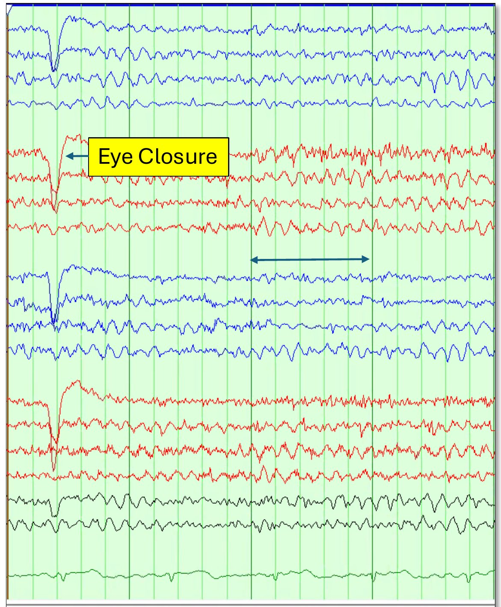
09 Montage▸
An EEG montage is the map or pattern used to connect scalp electrodes to the EEG machine — it defines which electrodes are compared to which to record brain wave activity.
1. Bipolar Montage
- Each channel compares two neighboring electrodes (e.g., Fp1–F3, F3–C3)
- Useful for localizing abnormalities via phase reversals — a phase reversal occurs when two adjacent electrodes pick up electrical activity that is out of sync, so the waveforms deflect in opposite directions (one up, one down)
- Example: Double banana — a common bipolar setup that curves like bananas over each hemisphere
2. Referential Montage
- Each electrode is compared to a common reference (e.g., A1 or Cz)
- Good for amplitude comparison
- Easier to spot generalized vs. focal activity
Double banana bipolar montage — chains curve over each hemisphere from frontopolar to occipital.
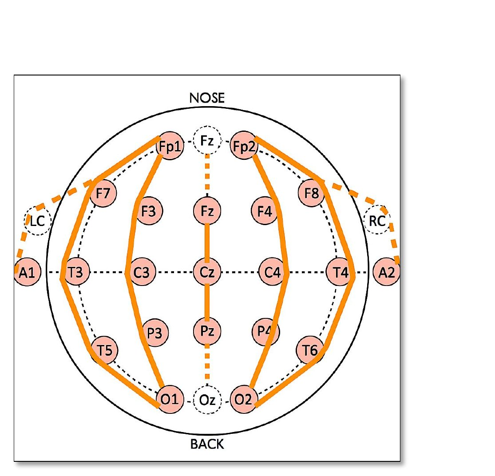
10 Morphology▸
Morphology refers to the shape and physical characteristics of the EEG waves — described as monomorphic or polymorphic.
Monomorphic: waves are about the same frequency and amplitude throughout.
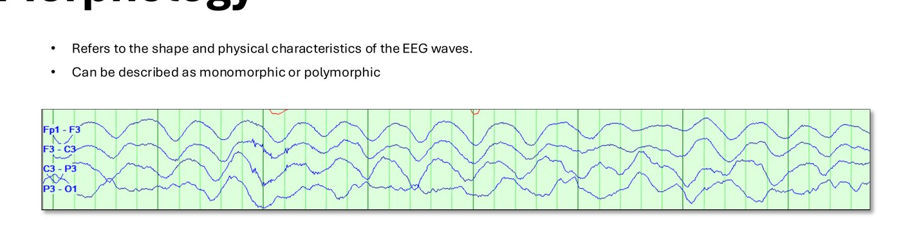
GPDs with triphasic morphology — sit on the ictal–interictal continuum.
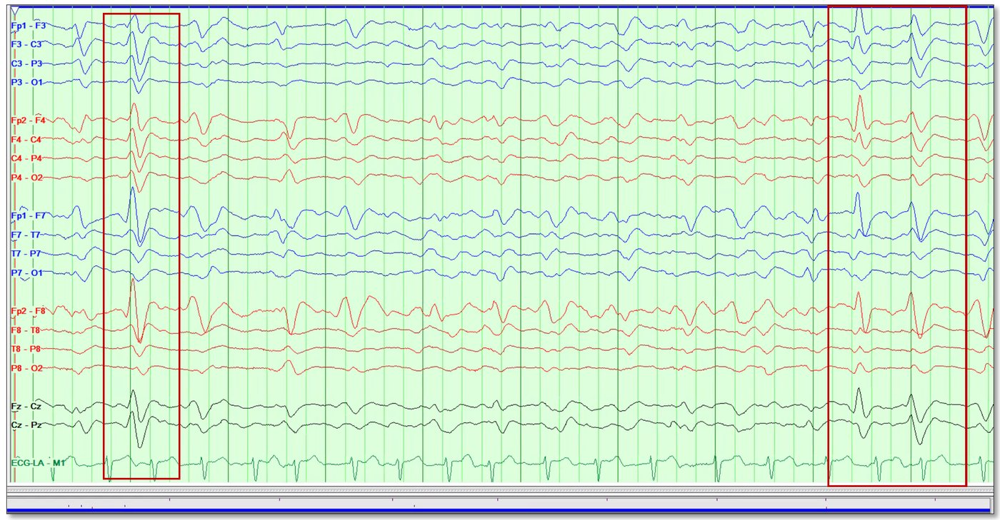
Polymorphic delta activity — variable frequency and amplitude within the delta band.
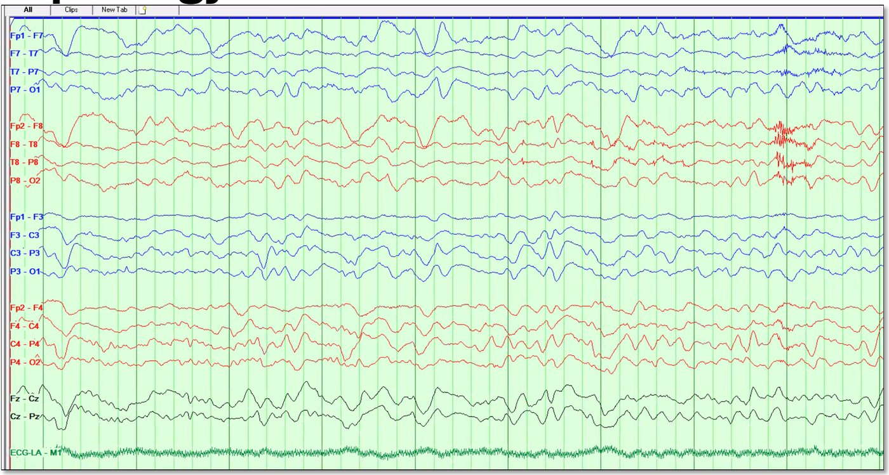
11 Symmetry▸
Symmetry describes approximately equal amplitude, frequency, and form of EEG activity over homologous areas on opposite sides of the head.
- Right hemisphere = red lines = even electrode numbers
- Left hemisphere = blue lines = odd electrode numbers
- Compare Fp2-F8 (right) with Fp1-F7 (left); compare Fp2-F4 (right) with Fp1-F3 (left)
Right hemisphere channels in red, left hemisphere in blue — compare homologous pairs.
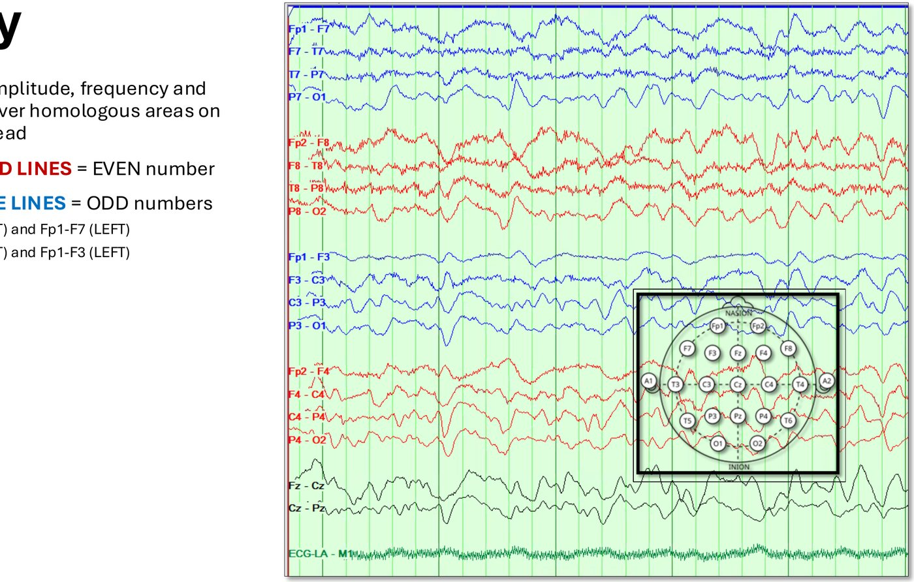
Categorize As
| Symmetric | e.g., Fp1-F3 looks the same as Fp2-F4 |
| Mild asymmetry | Consistent asymmetry < 50% voltage, or 0.5–1 Hz frequency difference |
| Marked asymmetry | ≥ 50% voltage difference, or > 1 Hz frequency difference |
You can eyeball symmetry, but for accuracy use the Waveform Cursor tool to measure the voltage difference directly.
Marked asymmetry — more than 50% voltage difference and more than 1 Hz frequency difference between homologous channels.
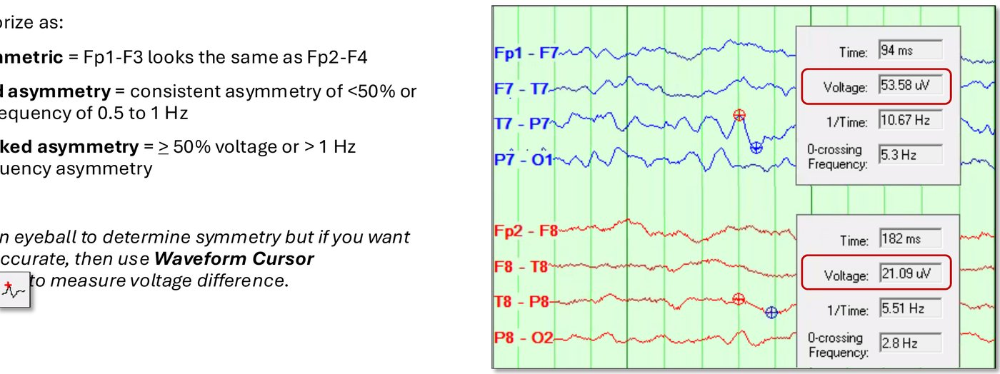
Eyeballing symmetry in an average montage.
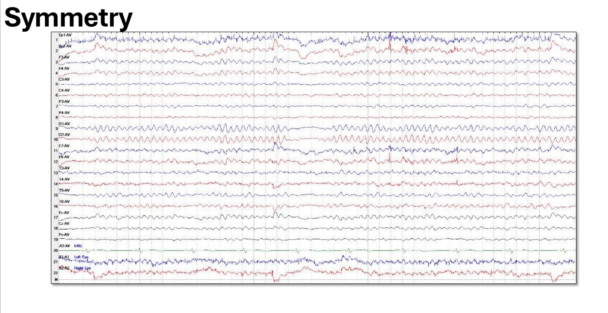
12 Continuity▸
| Continuous | < 1% of the record shows attenuation/suppression |
| Nearly continuous | Continuous but with occasional (1–9%) periods of attenuation/suppression > 1 second |
| Discontinuous | Attenuation/suppression alternating with higher-voltage activity; 10–49% of the record is attenuation/suppression |
| Burst-attenuation | 50–99% of the record is attenuation/suppression |
Continuous vs. discontinuous vs. bursts, side by side.
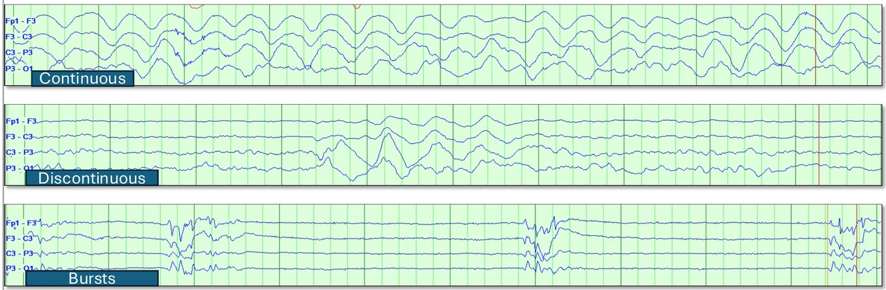
13 Timing▸
Timing describes the temporal relationship of discharges across different regions.
- Synchronous: discharges occurring at two regions simultaneously
- Asynchronous: discharges occur independently of one another
Synchronous — the discharge appears in the left and right frontal regions at the same time.
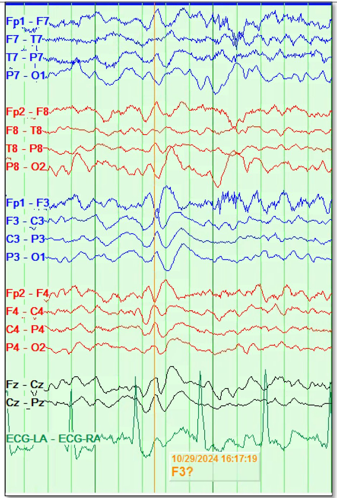
14 Rhythmicity▸
Rhythmicity describes recurring waves of equal duration.
- Regular: uniform — individual waves are consistent in shape and duration
- Irregular: not uniform, but still has some underlying rhythm that can vary over time
- Arrhythmic: waves of unequal duration and shape — no consistent pattern at all
Regular (top) vs. irregular (middle) vs. arrhythmic (bottom) patterns.
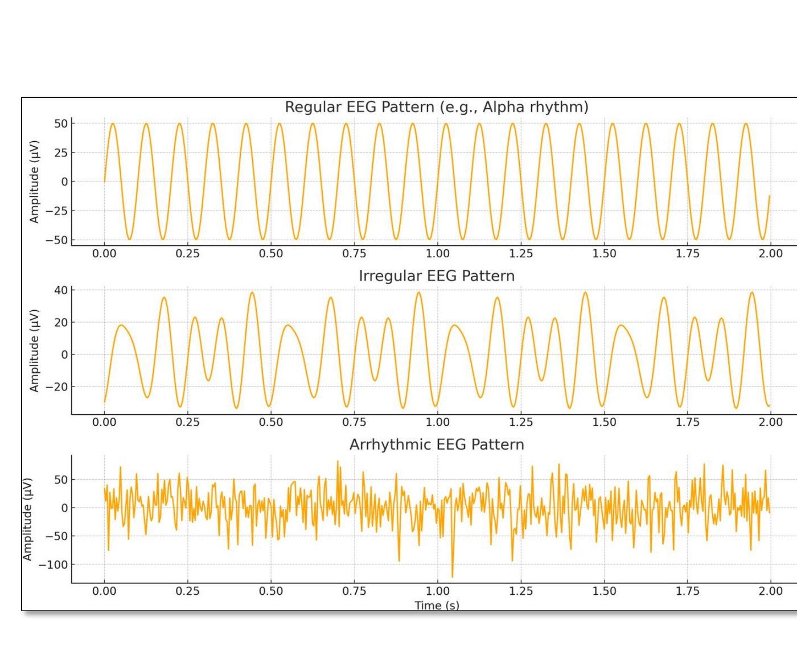
15 Sleep EEG▸
Stage 1
Drowsiness — fewer eye blinks, slow eye-roving movements — with loss of the PDR. Marked by POSTS and Vertex Waves.
- POSTS (Positive Occipital Sharp Transients of Sleep): sharp, transient waves maximal at the occipital regions, single or repetitive, generally < 50 µV
- Vertex Waves: sharply contoured waves maximal at the vertex, can occur in response to sensory (e.g., auditory) stimulus, rarely > 250 µV
Stage 1 — short run of vertex waves.
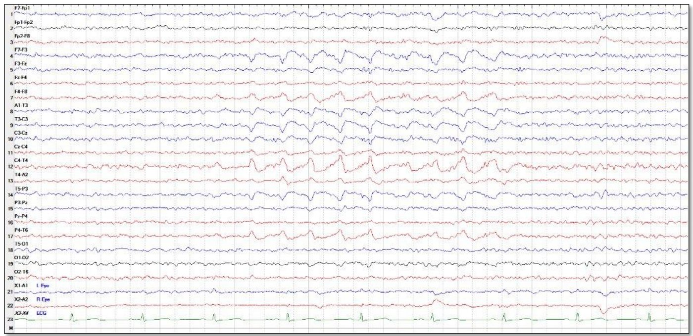
Stage 1 — large vertex waves.
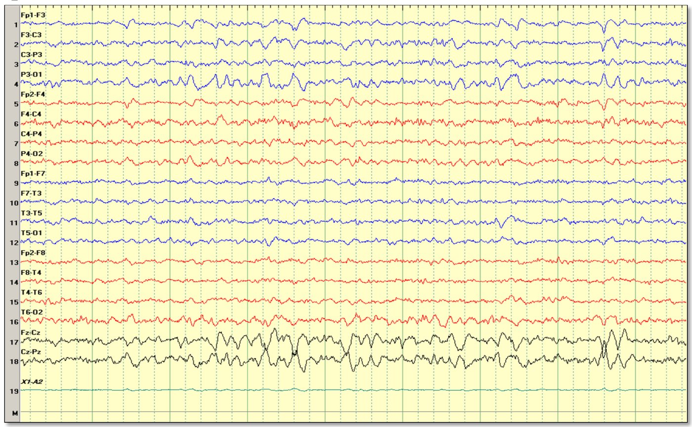
Stage 1 — vertex waves.
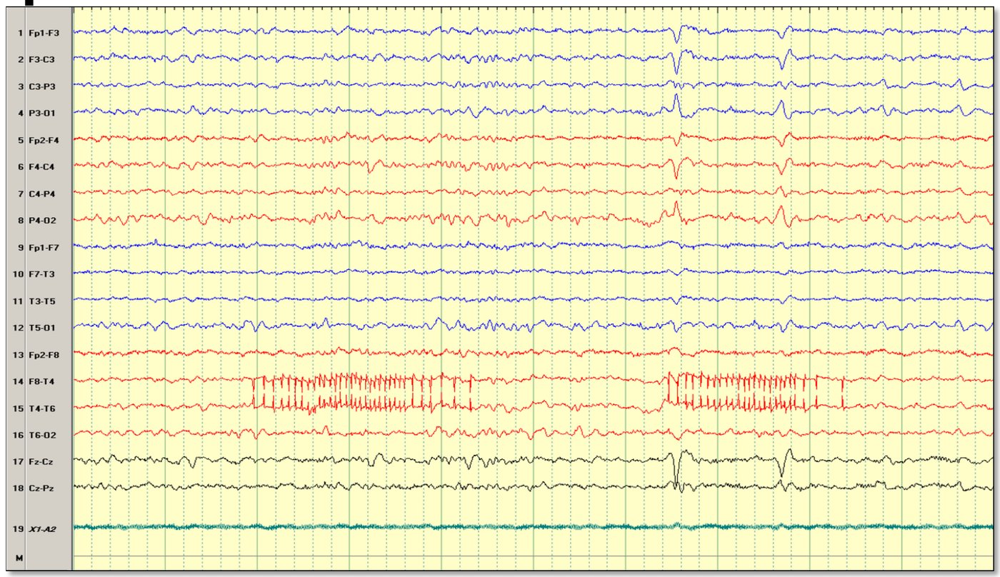
Stage 2
Sleep marked by K Complexes and Sleep Spindles, with loss of the PDR.
- K Complex: a negative sharp wave, often associated with a sleep spindle
- Sleep Spindle: 11–16 Hz activity lasting > 0.5 s, maximal at the central regions
Stage 2 — sleep spindles.
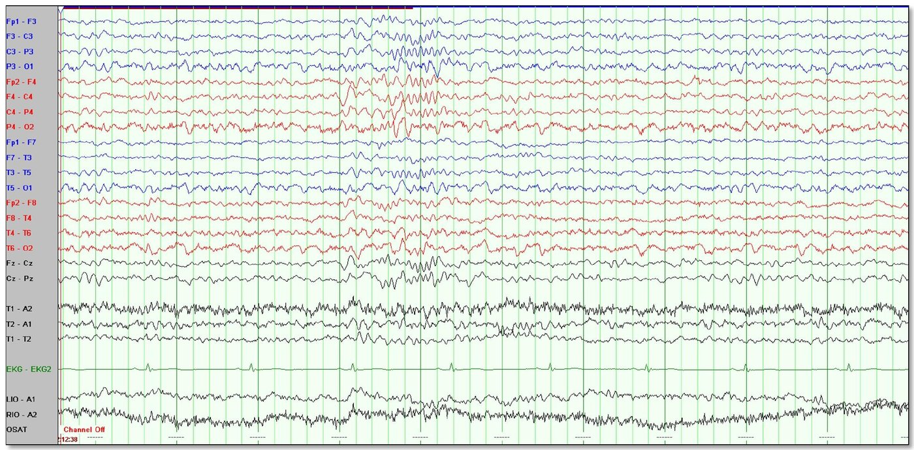
Stage 2 — K complex with sleep spindles.
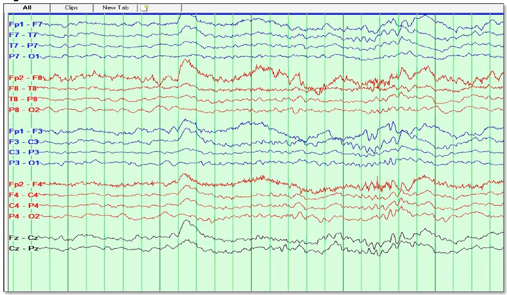
Stage 3 (Deep Sleep) & Stage 4
- Stage 3: more delta (20–50% of the recording)
- Stage 4: delta-predominant (> 50% of the recording); vertex waves and spindles are often absent
Stage 3 — delta waves of sleep.
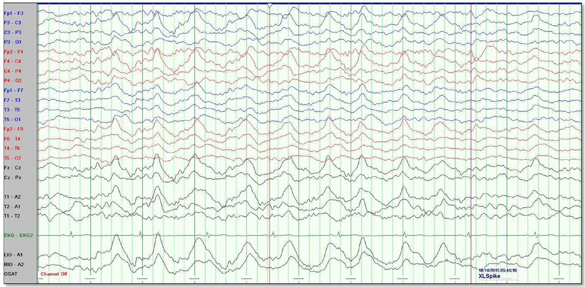
REM
- Rapid eye movement
- Low-voltage, fast background
- Hypotonia on submental (chin) EMG
16 Normal EEG Variants▸
Mu Rhythm
- Seen in the waking state
- About 8–10 Hz
- Occurs over the central or centroparietal regions
- Attenuated by thought or actual movement, especially of the contralateral limb
Mu rhythm, ~8–10 Hz, central/centroparietal.
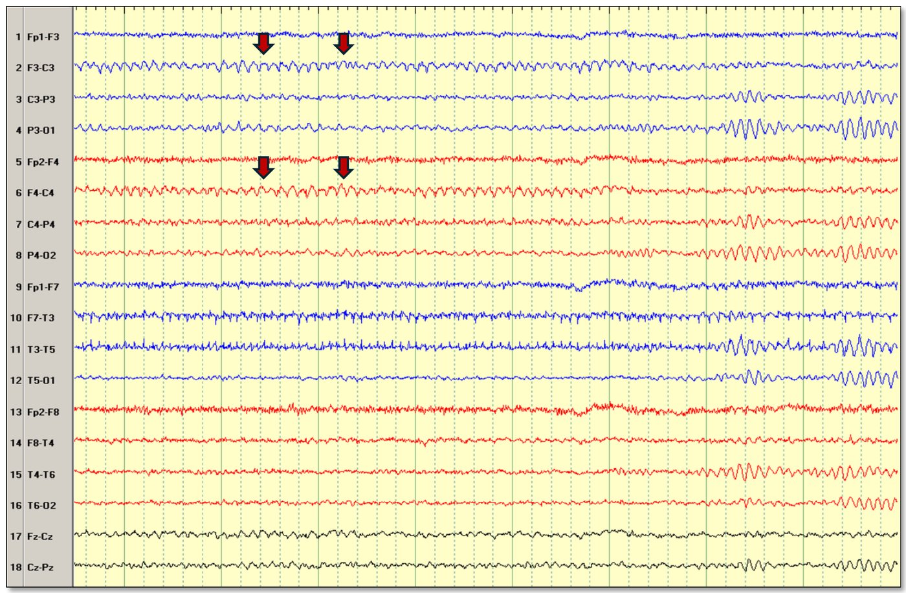
Mu rhythm in average montage.
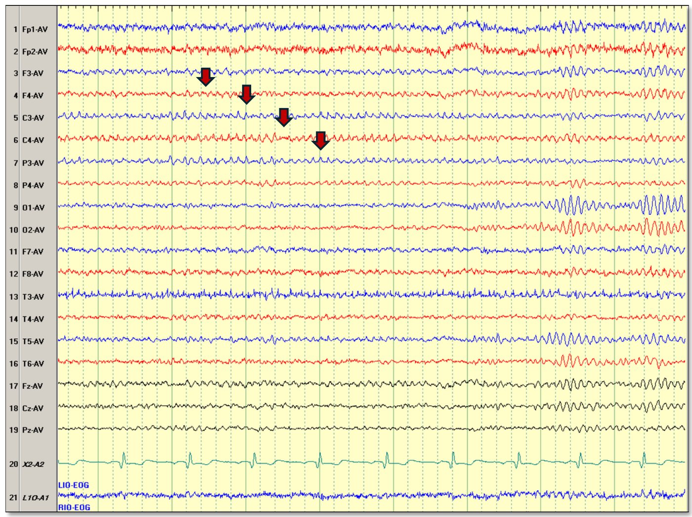
Wicket Spikes
- Seen in drowsiness and light sleep
- More common in older patients
- Spike-like monophasic surface-negative single waves or trains of waves over the temporal regions
- Can be seen in patients with epilepsy — don't over-call these as epileptiform
Left temporal wickets.
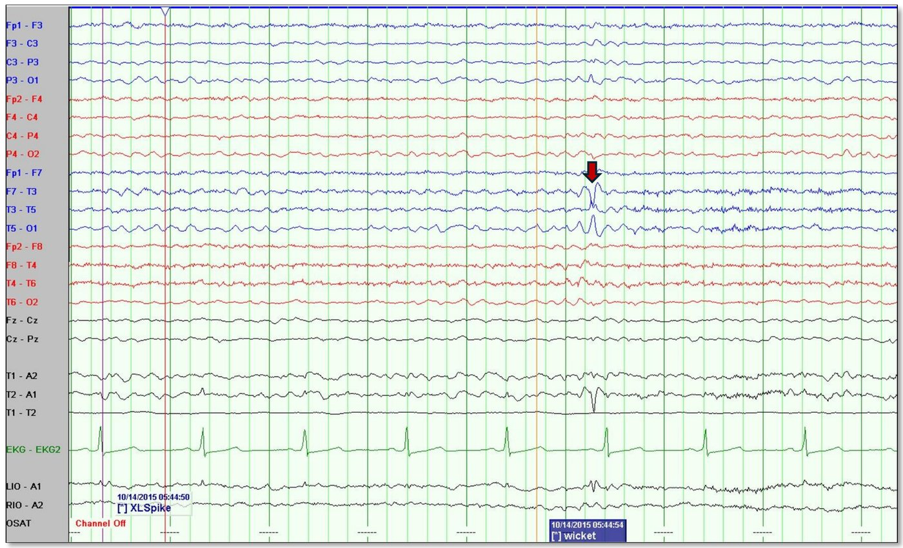
Wicket spikes — another example.
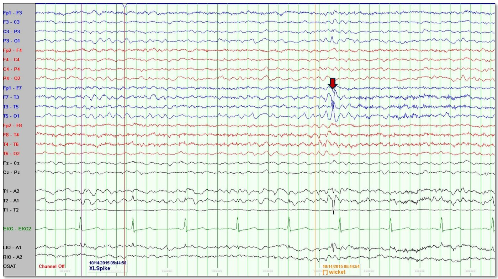
17 Artifacts▸
Chewing
Periodic high-amplitude activity in the frontotemporal regions that correlates with the patient on video. Note the lack of evolution — a key differentiator from a true seizure pattern.
Chewing artifact — periodic, high-amplitude, frontotemporal, no evolution.
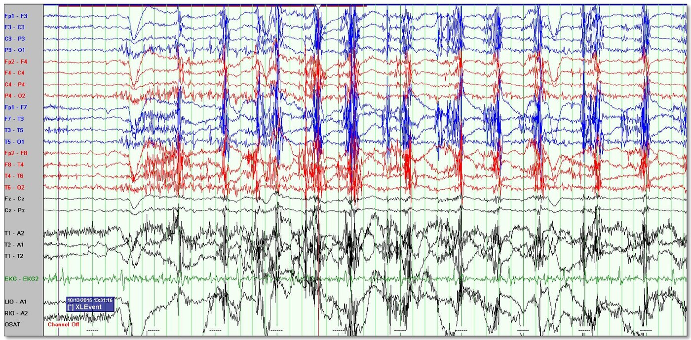
Looking Left / Eye Movement
Eye movement produces characteristic deflections in the frontal leads (the eye acts as a dipole) — recognize this pattern so it isn't mistaken for frontal slowing.
Eye-movement artifact from looking left.
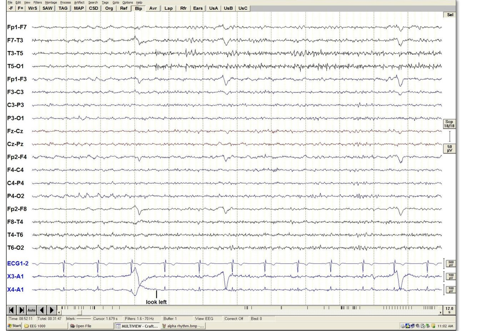
Pulse Artifact
Rhythmic artifact time-locked to the cardiac cycle, usually from an electrode positioned near a pulsating vessel.
Pulse artifact — time-locked to the ECG trace below.
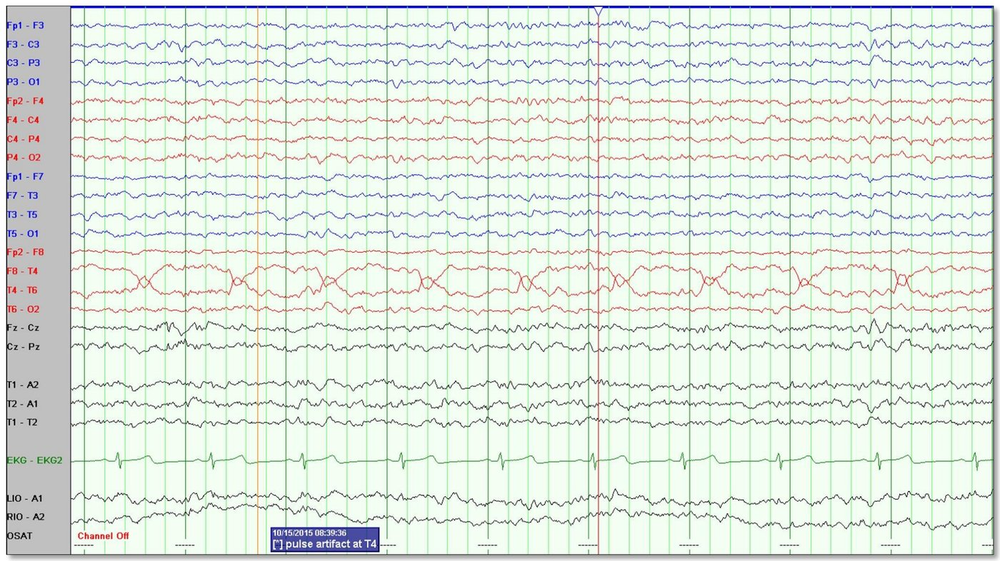
18 Abnormal EEG Terminology▸
In general, describing an abnormal EEG combines terms from Main Term A + Main Term B + Modifiers.
| Main Term A | Main Term B | Modifiers |
|---|---|---|
| Generalized · Lateralized · Bilateral Independent · Unilateral Independent · Multifocal | Periodic Discharges · Rhythmic Delta Activity · Spike and Wave · Sharp and Wave | Prevalence · Duration · Frequency · Sharpness · Voltage (amplitude) · Stimulus-induced or -terminated · Evolution |
Example description: right sharps and right frontotemporal parietal intermittent arrhythmic delta.
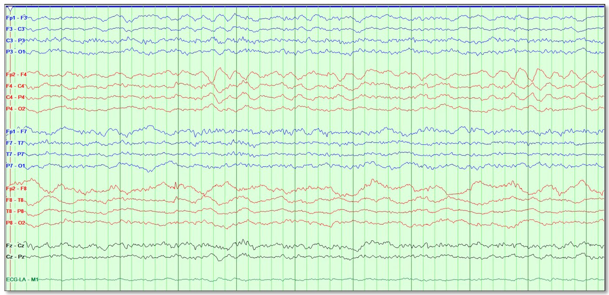
19 Epileptiform Discharges▸
Spikes and Sharps
- Spike: transient, pointed peak, 20–70 ms
- Sharp: transient, pointed peak, 70–200 ms
- Polyspike: two or more spikes in a row, lasting < 0.5 seconds. If > 0.5 seconds, it qualifies as a BIRD (Brief Potentially Ictal Rhythmic Discharge)
Prevalence
| Abundant | > 1 per 10 seconds, but not periodic |
| Frequent | > 1 per minute but < 1 per 10 seconds |
| Occasional | > 1 per hour but < 1 per minute |
| Rare | < 1 per hour |
Generalized spike-and-wave discharges.
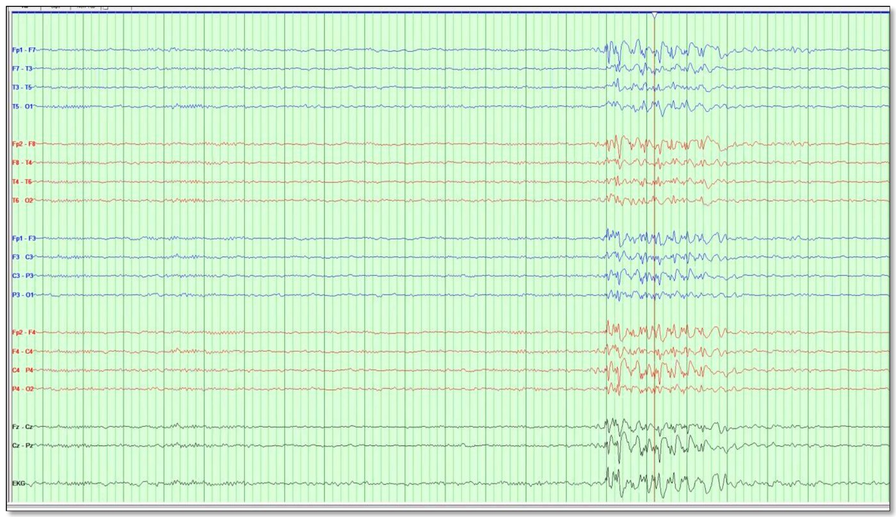
Burst Suppression Pattern
- Alternating bursts of theta and/or delta waves (often with sharp or fast activity) and periods of suppression (amplitude < 10 µV)
- Suppression phases occupy more than 50% of the recording
- Indicates severe brain dysfunction, or may be seen with certain anesthetic agents at deep sedation
- Burst suppression with identical bursts following anoxic brain injury is associated with a poor neurological prognosis
Burst suppression pattern.
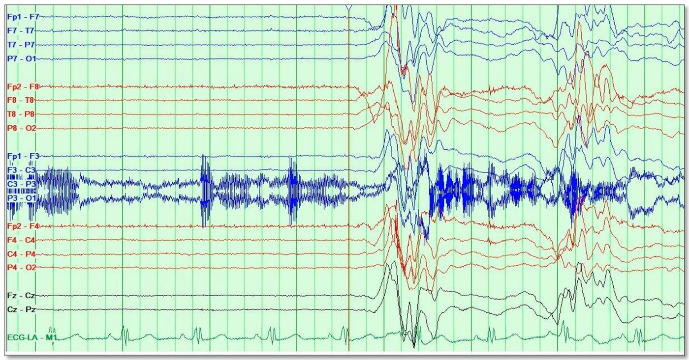
Triphasic Waves
High-amplitude (> 70 µV) positive sharp transients with preceding and following lower-amplitude negative waves. The first negative deflection is usually smaller and steeper than the one that follows the positive wave.
- Bilateral, showing an antero-posterior or postero-anterior phase lag
- Occur at ~1–2 Hz
- Seen in runs, often with low-amplitude or absent background activity (< 40 µV) in between
- Can change with arousal or noxious stimuli (regress or increase)
- Most often seen in comatose patients with metabolic encephalopathy
- Tend to reduce with sleep or IV benzodiazepines
20 Seizure & Status Epilepticus▸
Electrographic Seizure
Epileptiform discharges averaging > 2.5 Hz for > 10 seconds (> 25 discharges in 10 seconds), OR any pattern with definite evolution lasting > 10 seconds.
Electroclinical Seizure
A definite clinical correlate (time-locked) to the EEG pattern, of any duration — EEG and clinical improvement with an ASM.
Electroclinical Status Epilepticus
- Electroclinical seizure for > 10 continuous minutes, OR > 20% of any 60-minute period
- Ongoing electrographic seizures with bilateral tonic-clonic activity > 5 minutes
Ictal-Interictal Continuum (IIC)
Synonymous with "possible electrographic seizure" but is not itself a diagnosis — doesn't meet seizure criteria, but there is a reasonable chance it's contributing to impaired alertness.
Electrographic seizure pattern.
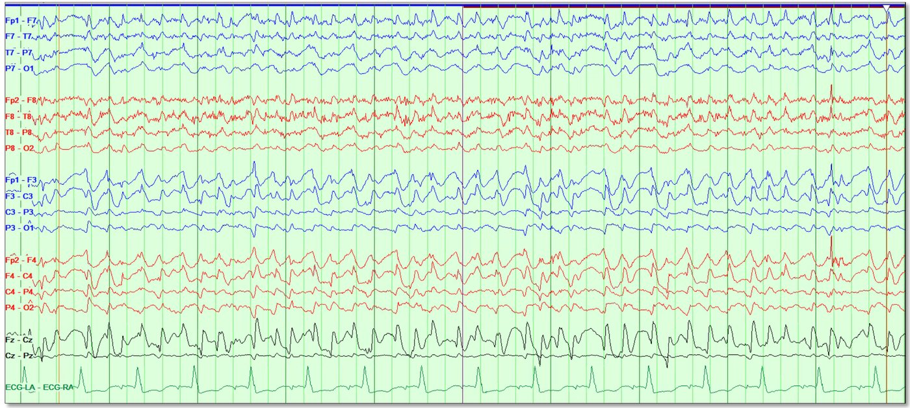
Unresponsive patient in NCSE — note the evolution of discharges from the right temporoparietal region, lasting at least 10 seconds with evolution, meeting seizure criteria.
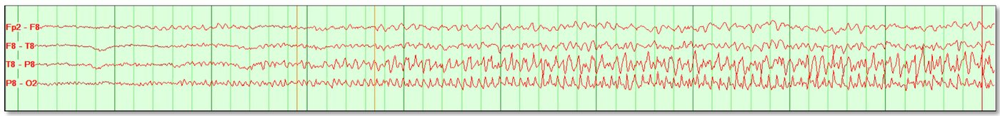
Worked Example — Evolution in Real Time
Part 1: compare the two bracketed segments — note the evolution of the discharges. Seizure activity appears to originate from the occipital region (red arrow).
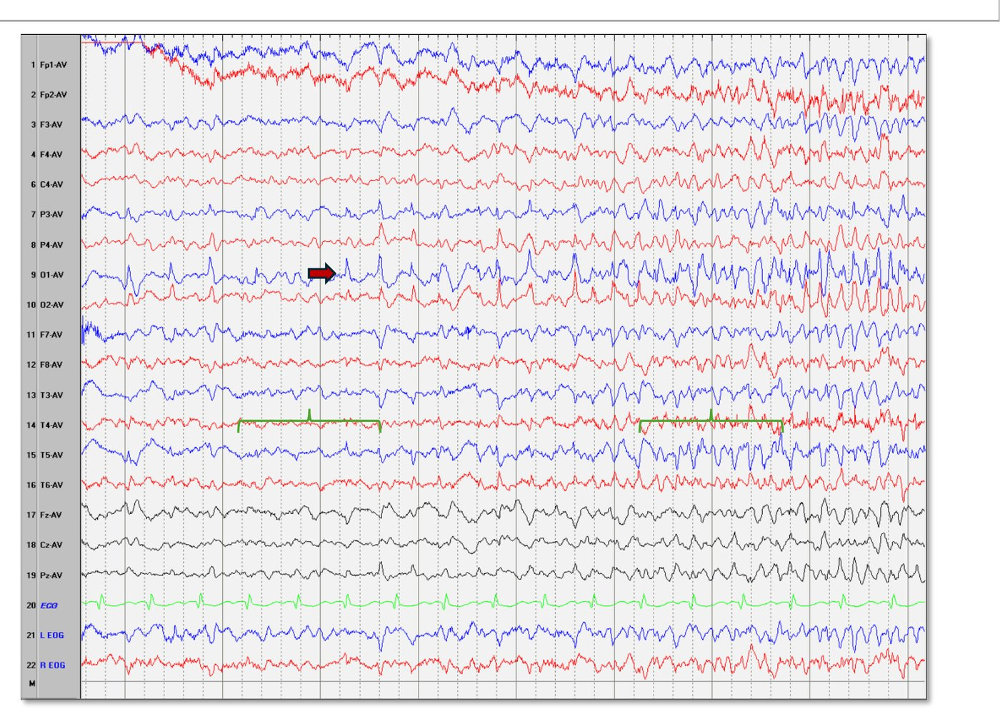
Part 2: generalized discharges. Note the heart rate (ECG) does not change — this patient was responsive but had isolated right gaze deviation.
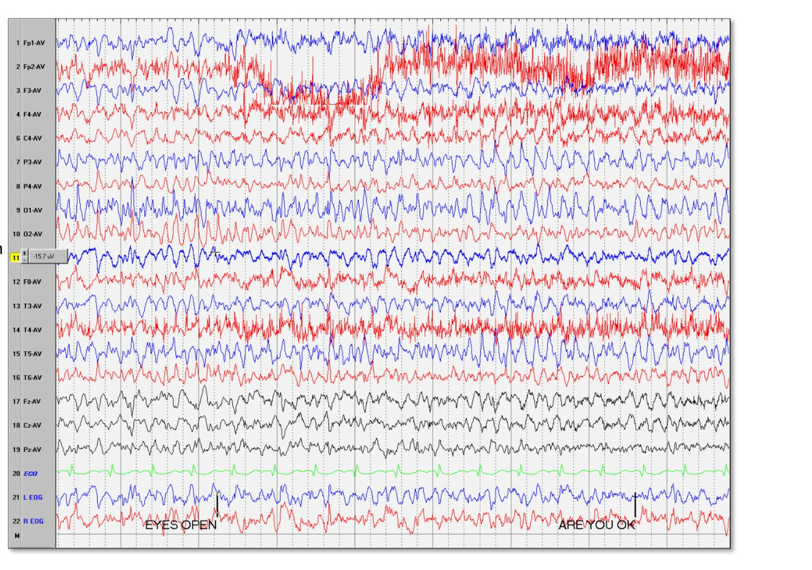
Part 3: after the seizure.
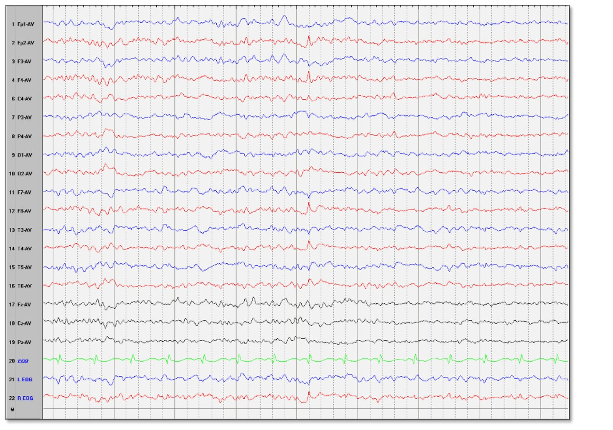
21 Pearls & Quick Reference▸
Memorize
- EEG measures the difference between EPSPs and IPSPs in the extracellular matrix — the summed activity of cortical neurons.
- ~6 cm² of cortical surface must be synchronously activated to generate a visible discharge.
- Frequency bands (D-T-A-B): Delta 0–4, Theta 4–8, Alpha 8–12, Beta 13–30, Gamma > 30 Hz.
- Amplitude categories: Very Low < 20 µV, Low 20–49, Medium 50–149, High ≥ 150 µV.
- Wait > 1 second after eye closure before reading PDR frequency.
- Symmetry: mild asymmetry < 50% voltage or 0.5–1 Hz; marked asymmetry ≥ 50% voltage or > 1 Hz.
- Prevalence: Abundant > 1/10sec, Frequent > 1/min, Occasional > 1/hr, Rare < 1/hr.
- Electrographic seizure: > 2.5 Hz for > 10 sec, OR definite evolution > 10 sec.
- Never annotate "SEIZURE" or "SZ" as a resident — describe findings instead.
- Always save (Ctrl+S) annotations, and never write in the white box on exit.
Before You Start Reading — Checklist
- Confirmed Natus access via uapps.uoflhealth.org
- LFF, HFF, Notch, Sensitivity, and Time Base all set correctly
- Calibrated the display (10 sec/page, gridlines confirmed)
- Checked for loose leads / lead artifact before reading
- Reviewed patient's ASMs, sedatives, and imaging before reading
- Prepared a three-liner for the attending